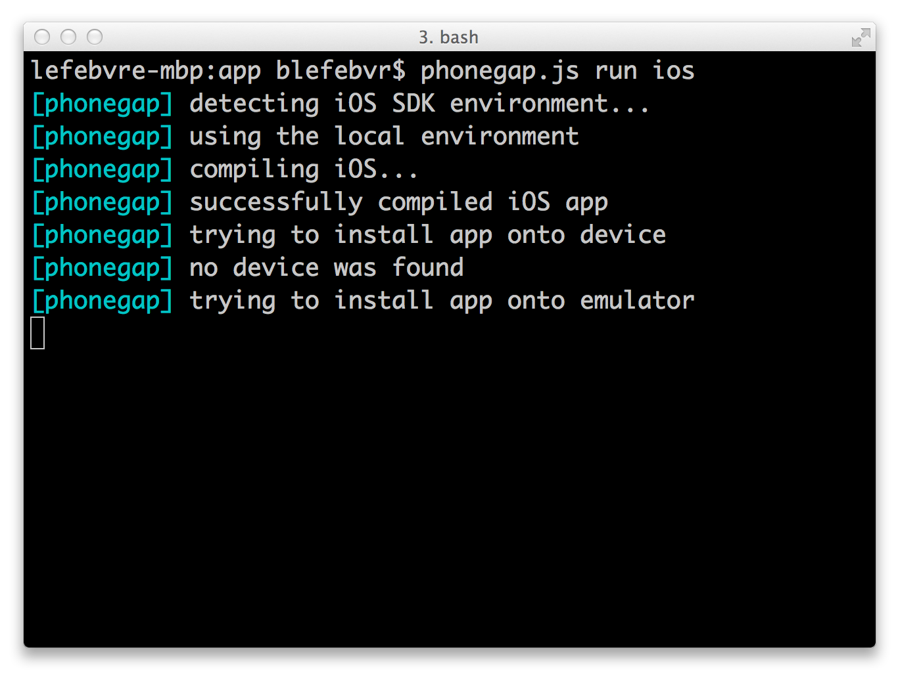

CQ Mobile Apps
Introductions
Andrew
- Senior Technical Product Marketing Manager, Mobile
- asavory@adobe.com
- @savs
Bruce
- Computer Scientist
- blefebvr@adobe.com
- @brucelefebvre


You are here
You have a big investment in your existing website:
- Lots of content
- Lots of processes
- Lots of training
- Lots of integrations
You need to address mobile
Mobile challenges
- Mobile websites are easy (with CQ)
- Mobile apps are hard
Mobile apps are hard
How do you:
- Re-use your content
- Provide back-end server infrastructure
- Develop for multiple mobile platforms
Mobile experiences are hard
Unique challenges:
- New functionality to use (touch, sensors)
- Constraints (memory, performance, battery, connectivity)
- Difficult to update

Key challenges
- Repurposing content and workflows from CQ
- Leveraging existing infrastructure to feed complex apps
- Empowering Marketing and giving control back

CQ Architecture
- OSGi Framework
- Java, JSP, JS
- Content store
- Scalable
PhoneGap
Apps written with web tech
you know and love
Cross platform
- iOS
- Android
- Blackberry
- WebOS
- Windows Phone
- Symbian
- Bada
- more on the way...
"...using HTML, CSS, and Javascript to not get locked into a proprietary vendor platform."- Brian LeRoux
How?
Hybrid apps
(HTML content in a native webview)
Device API
Javascript to native bridge to access device features
- Geo location
- Accelerometer
- Camera
- File system
- Contacts
- Notifications
Open source

PhoneGap CLI
as of version 3.0
In the real world

PhoneGap Build
- Compile in the cloud
- Avoid vendor SDKs
- Now part of Creative Cloud

Content Sync
- Standards based
- Optimized for low bandwidth
- All content welcome
Scenario: BlueSky
The requirement
- Custom mobile application
- Re-use server architecture
- Deliver a dynamic experience
What we built
- Third-party client app
- PhoneGap, Angular.js
- Server-side JSPs emitting JSON
- Hypermedia API
Demo


The value
- Mobile experience, not mobile effort
- CQ as app server leverages existing investment, common technologies
- Loosely-coupled API provides flexibility, minimises pain
Scenario: Newsreader
The problem
- Repurpose content
- Build apps across platforms
- Smooth workflow
What it is
- A PhoneGap app from CQ
- ContentSync for content reuse
- PhoneGap Build for cross-platform
Interlude
Do you read the release notes?

Demo

Summary
Scenario: CQ Mobile
Summary
Resources
- PhoneGap Beliefs, Goals, and Philosophy - Brian LeRoux
References
- Question designed by Anas Ramadan from The Noun Project
- Package designed by Hakan Yalcin from The Noun Project